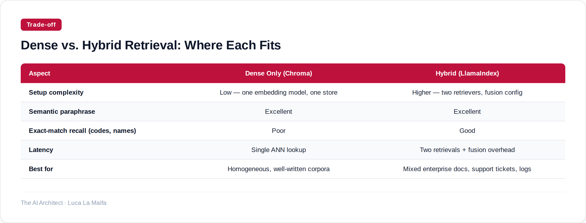

Vector search is not one thing — knowing when to use dense embeddings versus sparse retrieval changes everything downstream.
August 14, 2026
There are two fundamentally different ways to match a query against a corpus, and most teams pick one without really thinking about the other. Dense retrieval — turning text into floating-point vectors and finding nearest neighbors — gets all the attention right now. Sparse retrieval — think BM25, TF-IDF, keyword overlap — gets dismissed as "old school." That framing is wrong, and it costs people real accuracy in production.
Dense embeddings are excellent at semantic similarity. Ask "how do I cancel my subscription" and they'll surface a document titled "terminating your account" even though no word overlaps. That's genuinely useful. But they're terrible at exact-match recall: product codes, error codes, proper nouns, very domain-specific jargon. Sparse methods handle those effortlessly. The honest answer for most enterprise search problems I've worked on is that you need to know which failure mode hurts you more — and then probably combine both anyway.
Option A
chroma-core/chroma — Embedding database and search infrastructure for AI applications.
That last line in the output is the thing to sit with. The error-code document didn't surface — not because the embedding model failed, but because the query carried no semantic signal pointing toward payment errors. A sparse retriever would have caught it if the user typed "E-4021" directly. Dense retrieval wins on paraphrase; sparse retrieval wins on precision. Neither wins unconditionally.
LlamaIndex takes a different approach to this problem. Rather than being a database, it's a retrieval framework — it sits on top of whatever store you choose and gives you composable retrieval strategies. The relevant one here is its hybrid retriever, which runs both a vector search and a keyword search, then fuses the result lists using reciprocal rank fusion or a weighted merge. You configure the balance; LlamaIndex does the plumbing. In practice, this is what I actually deploy for enterprise document search, because the combined approach consistently outperforms either leg on its own across heterogeneous corpora.
Option B
run-llama/llama_index — Indexing and retrieval framework built on top of embeddings.

My rule of thumb: if your corpus is relatively clean and your users phrase queries naturally — think a knowledge base written by technical writers — dense-only is fine and simpler to operate. If your corpus mixes natural-language prose with structured identifiers, version numbers, or code, you will regret not adding the sparse leg. The latency cost of hybrid retrieval is real but usually small relative to the LLM call that follows. The accuracy gain, on the other hand, is immediately visible in user feedback.
One thing I'd push back on in how the industry talks about this: embedding model choice gets obsessed over, while retrieval strategy gets ignored. Swapping from one embedding model to another might move your recall@5 by a few points. Switching from dense-only to hybrid on a mixed corpus can move it by fifteen. Spend your tuning time accordingly.
Inspired by llm-gemini 0.33 (Simon Willison)